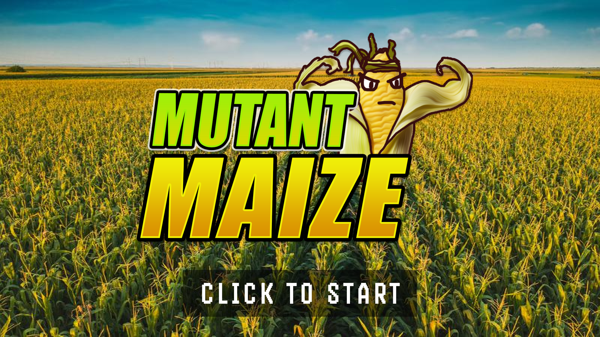
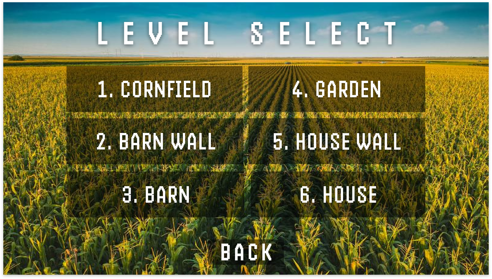

This document describes a game called "Mutant Maize". It is a 2D game with levels focused on a mix of side-scroller and platformer-jumping. The game will employ sprite-based animation, tiled backgrounds, collision detection, physics, AI, side scrolling & gravity, efficient memory management, render threading, and more basic 2D game techniques.
Mutant Maize will be developed as a web-based game using the Wolfie2D game engine, a game engine written in Typescript created by Joe Weaver and Richard McKenna. Wolfie2D utilizes WebGL for rendering on the web browser. Artwork will be relatively simple. Piskel will be used to draw tilemaps and sprite sheets. Photoshop will be used to create the logo and level background images.
Rob the Cob is a mature ear of corn during the Fall. He doesn't know when gained sentience but continued to live out his days observing the world. Until one day he watches his friends and family be harvested by farmers, never to be seen or heard from again. The remaining corn whimpers of the horrors and experiments that the farmers exact on their lost comrades. When evening starts to roll around, the farmers stop for the day, Rob manages to escape the doom of being harvested. As night rolls in he equips himself with an arsenal of corn related tools, Rob seeks to escape the farmland and starts plans to build an army to seek revenge.
Rob the Cob’s objective is to make his way through the farm with the goal of exacting revenge for his fallen corn brethren and ultimately escaping. Rob will use corn-related tools to overcome any obstacles in his way. Obstacles that Rob will encounter are bugs and pests that like to feed on crops, as well as the difficult terrain of barns. Bosses will be objects in a generic farm that seem opposing from a cob of corn’s perspective like a chicken and a dog.
Levels such as the cornfield and barnyard will be played as side-scrollers while levels with escalation will be played as a platform jumper. With side scrolling, with Rob the Cob able to run left and right, and jump up and down onto platforms and other surfaces. He is also able to grapple onto platforms to reach higher places or enemies to drag them closer. He is also able to shoot different projectiles to defeat enemies or to destroy certain platforms and environments. Platform jumping will have the same mechanics, escape with the primary goal of reaching the end goal through various different maneuvers. Some levels will focus on more verticality, some on maze/confined movement, or a mix of everything.
Rob can use his silk as a grappling hook for movement and as a weapon against mobs. He can also shoot out kernels of corn as ranged fire. He can also collect solar energy inside him to charge up a shotgun blast of popcorn.
Grappling has a weight class mechanic where the unit with lesser weight is moved towards the unit with greater weight class: Items < Mobs < Rob the Cob < Platforms/Bosses/Walls
Each level will have mobs and creeps that Rob must fight through.
The 1st level features Rob traversing the cornfield, defeating mice roaming on the ground. This level should be relatively easy to complete and be a stomping ground for new players to get used to the mechanics and physics. Basic shooting and movement will be introduced here.
The 2nd level features Rob jumping and climbing up a wall of a barn with the main adversaries being swooping birds. At the end of this level, Rob enters through a window. Grappling will be introduced here.
The 3rd level is a boss fight against a chicken. The chicken will attack Rob in pattern-based combat, it is up to the player to identify the pattern and properly take advantage of windows to deal damage. The chicken attacks with periodic charges across the level and pecks. For a ranged attack, it will throw an egg at Rob. Rob can deal with this by shooting the egg before it hits him, or dodging it.
The 4th level is the journey from the barn to the farmer’s house. It will not be in a cornfield, but through a field of tomatoes, flowers, and other distinguishable produce. There will be mice and birds that will act as the main adversary. The shotgun/corngun will be introduced here.
The 5th level is Rob escalating a wall up the farmer’s house. It will be similar to the second level, but with a different background and platforms. There will be more platforming and will have a lot more bird adversaries to overcome.
The 6th level is a boss fight against the farmer’s dog. The dog will also utilize pattern-based combat. The dog has a pouncing attack and a biting attack.
This game will be played using both a keyboard and mouse. Once started, use the following:
W: Jump Up
A: Move Left
S: Crouch Down
D: Move Right
SPACE: Action/Interact
“Normal”: to collect health packs/interact with level
LEFT_MOUSE: Shooting
(Click) Kernel Shooter: mid/long range continuous line of projectiles
(Hold) Popcorn shotgun: short/mid range burst of projectiles
RIGHT_MOUSE:
Grapple: sends tendrils out to latch onto/reach objects/higher places
ESC/P - This pauses the game and presents a pop-up window to the player asking them to continue when they are ready. If a game is not in progress, the buttons do nothing. And if the pop-up window is already up, it’ll act as a way to resume the game.
Some features will be introduced over the stages, such as Cornshooter, Corngun, and Grapple.
For the GUI that will be presented we will have a couple of basic default menus and in-game HUD.
The Splash screen will show a cornfield with the main game logo and character at the front and center of the screen. There will be a “Click to Start” text to inform the user and if done will bring the player to the Main Menu
The title screen will have a blurred general image of a cornfield as the overall background with the game logo and title on top. It will also include different buttons that would show the player information or to adjust specific parameters. The main menu buttons that will be presented are:
"Play Level" will bring up a menu that allows the player to select the stage they want to play assuming they have it unlocked.
"Controls" will bring up a menu that will give the keybind that will control the character.
"About" will bring up a menu that gives a brief game lore and what the game is about.
"Credits" will bring up a menu page crediting the developers.
"Help" will bring up a menu showing the keybinds for cheats codes.
This menu will list the different playable stages that the player can choose from. The stages will appear as boxes with the corresponding level and splash art on it. The boxes will be shaded in a darker color if the stage has not been unlocked by the player yet.
The pause menu will appear if and only if the game is in progress. On this menu, the menu will allow the player specific options such as:
"Continue" will resume the gameplay
"Restart" will reset the stage
"Controls" will bring up a menu that will give the keybind that will controlthe character.
"Main Menu" will allow the player to return to the main menu if they confirm on the pop up that appears.
The in game HUD will display the current condition of the player. The information that will be displayed to the player will be:
"Pause Button": Another method to pause the game other than the keybind located at a corner of the screen to prevent it from interfering with the gameplay.
"Stage Level": It will be displayed next to the pause button to show the stage level and similar to not impede the player's visual of the stage.
"Health Bar": The player's current health bar
All artwork in the game will be original. The following needs to be created:
Rob the Cob sprite/animations
Idle
Walking Right
Walking Left
Jumping Right
Jumping Left
Jumping Up
Grappling (with corn silks)
Shooting (Regular)
Charging up (Shotgun)
Shooting (Shotgun)
Taking Damage
Dying
Mice sprite/animations
Idle
Moving left
Moving right
Attacking
Taking damage
Dying
Birds sprite/animations
Idle
Flying left
Flying Right
Attacking
Taking Damage
Dying
Chicken sprite/animations
Idle
Charging Left
Charging Right
Pecking
Launching Egg
Dog sprite/animations
Idle
Pouncing Left
Pouncing Right
Bite attack
Misc
Health pack sprite
Levels
1: Cornfield
Cornfield background image
Dirt ground tiles
Green plant platform tiles
Brown dirt platform tiles
2: Barn Wall
Red-painted wood wall background image
Dirt ground tiles
Red wood platform tiles
3: Barn Interior/ Chicken Boss Fight
Brown wood wall background image
Dirt ground tiles
Brown wood platform tiles
Hay platform tiles
4: Garden
Garden produce background image
Grass ground tiles
Green plant platform tiles
Dirt ground tiles
5: Farmer’s House Wall
Gray/faded white wood wall background image
Grass ground tiles
Gray/faded white wood platform tiles
6: Farmer’s House Interior/Dog Boss Fight
Gray/faded white wood wall background image
Gray/faded white wood ground tiles
Level Change animation
Fade from black on level start
Fade to black out on level end
Tiles: Any tiles placed are collidable surfaces because they will be either ground tiles or platform tiles. Some tiles can be broken and it will be up to the player to find out which ones can be destroyed to help with gameplay or just for fun.
All sound effects will be original. Sounds must be made to coincide with each of the following events:
Rob the Cob
Walking
Jumping
Landing on the ground
Shooting kernels
Charging popcorn shotgun
Shooting popcorn shotgun
Using silk grabble
Dying
Taking Damage
Mobs/Bosses
Taking Damage
Dying
Attacking
Moving
Level
Level starting
Level ending
There will be separate tracks for each level, conveying the theme of each level. There will be a unique track to be played whenever a boss fight is initiated